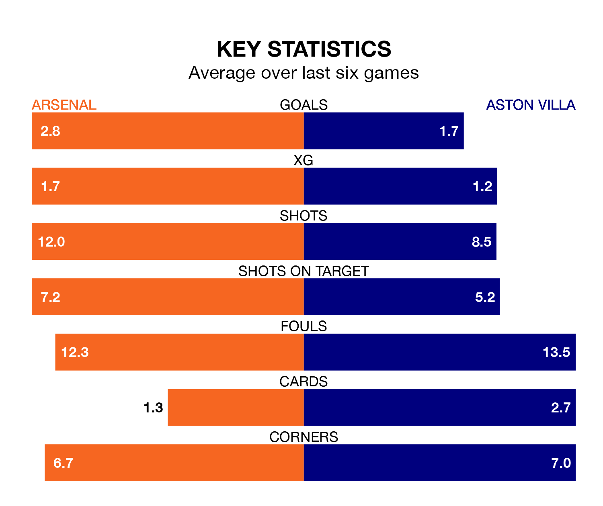

Sunday's match between Arsenal and Aston Villa promises to be one for the neutrals, as two of the Premier League's most free-scoring sides go head-to-head.
Ahead of the game at the Emirates Stadium, the Gunners and the Villa sit top and fourth in the goal-scoring charts, with 75 and 66 goals respectively.
Midfielder Bukayo Saka leads the way for the home side, having bagged 14 goals in their 31 games to date.
And Ollie Watkins has been the main man in the opponents' penalty box for Villa, with 18 goals.
Arsenal are top of the table after 31 games, of which they have won 22 and drawn five, earning 71 points.
Villa are four places behind the Gunners in fifth, with 18 wins and six draws putting them on 60 points.
In David Raya, the hosts can rely on one of the league's safest pair of hands. He has kept 12 clean sheets in his 25 appearances this season, and no 'keeper has prevented the opposition scoring more often in the Premier League.
In the Villa's net, Emiliano Martínez has seven clean sheets in 30 games. He has conceded a goal every 66 minutes, 80% more often than the 118 minutes between goals for Raya Martin.
Arsenal are in fantastic form in the Premier League, with five wins and a draw from their last six games.
With two wins and two draws over that period, the away team's form is much worse – they have taken eight points from 18, compared to Arsenal's 16.
In the last 10 years, Arsenal and Villa have played each other on 14 occasions. Arsenal won 10 of them and Villa four.
On average, the Gunners scored 2.2 goals and the Villa 0.9 in those matches.
Their last meeting was on December 9, when Villa won 1-0 at home.
Arsenal's last match was on April 6, a 3-0 win against Brighton and Hove Albion, with Kai Havertz, Leandro Trossard and Saka getting the goals for the Gunners.
Villa drew 3-3 with Brentford last time out, also on April 6, with Watkins (two) and Morgan Rogers on the scoresheet.
Updated: 14:47 (UTC), 09/04/24